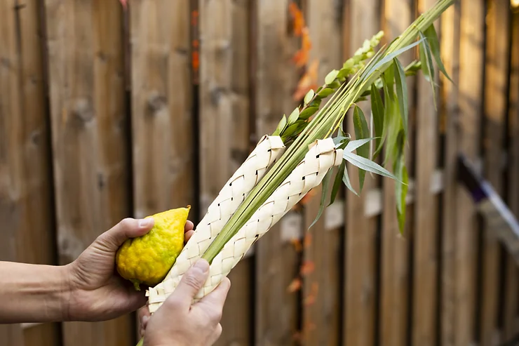

Blog
This Friday evening will begin the holiday of Sukkot. It is a multifaceted holiday that connects us to the environment, to our history and heritage, and to the joy of our spiritual tradition. It’s known as Chag HaAssif, the Harvest Festival, because it’s celebrated during autumn (in the Northern Hemisphere), which is the time of year in Israel when the final harvest is brought in from the fields. In ancient times, farmers would build Sukkot in their fields during the harvest to maximize the time they put into completing the harvest. The Sukkahs we build for the holiday also remind us of the temporary dwellings our ancestors lived in during the 40 years that we wandered in the Sinai desert following our liberation from slavery in Egypt. Traditionally, we eat our meals in the Sukkah, and there are some who even sleep in their Sukkahs. There’s just something special about eating outdoors, which connects us to nature in ways that we may have simply lost touch with over the course of our busy lives. This is another possible reason why Sukkot is referred to in our liturgy as Z’man Simchateinu, the Season of our Joy. About Sukkot, the Torah says: וְשָׂמַחְתָּ֖ בְּחַגֶּ֑ךָ אַתָּ֨ה וּבִנְךָ֤ וּבִתֶּ֙ךָ֙ וְעַבְדְּךָ֣ וַאֲמָתֶ֔ךָ וְהַלֵּוִ֗י וְהַגֵּ֛ר וְהַיָּת֥וֹם וְהָאַלְמָנָ֖ה אֲשֶׁ֥ר בִּשְׁעָרֶֽיךָ You shall rejoice in your festival, with your son and daughter, your workers, the Levite, the stranger, the orphans, and the widow in your communities. Deuteronomy 16:14
In other words, Sukkot is a joyous festival for everyone. In fact, it’s the only holiday which is referred to simply as הֶחָג the Festival. Sukkot serves as the perfect way to end the holiday period. What begins with the somber tones of Rosh HaShanah and the introspection of Yom Kippur ends with the time of our Joy. During Sukkot in the days of the Holy Temple, we are told that Jerusalem became a huge festival. Because it is a pilgrimage festival, people traveled from all across the Land of Israel. Following the evening offerings in the Temple, when the sun went down, huge candelabras were lit around the city (except on the first day of the Festival and Shabbat), and Jerusalem was lit up as bright as day. The people celebrated with music, dance, acrobatics, and laughter for the entire seven days of the holiday. In fact, Rabban Shimon ben Gamliel, the head of the Sanhedrin (equivalent to the US Supreme Court) was said to have juggled eight flaming torches without dropping a single one during the festivities. The highlight of the Festival however, was a ceremony known as Simchat Beit HaShoeivah, the ceremony of drawing the water (literally- The Joy of the House of Drawing the Water). The Talmud says: מִי שֶׁלֹּא רָאָה שִׂמְחַת בֵּית הַשּׁוֹאֵבָה, לֹא רָאָה שִׂמְחָה מִיָּמָיו. Whoever did not see the Simchat Beit HaShoeivah has never seen celebration.
Water was never offered on the Altar of the Beit HaMikdash (the Holy Temple) except during Sukkot at the Simchat Beit HaShoeivah. Great ceremony was associated with it. In the morning, water would be drawn from the Pool of Shiloach (בְּרֵכַת הַשִּׁילוֹחַ - where Hezekiah’s tunnel begins in Jerusalem today). The water was brought to the Temple from the Spring amid fanfare and music, where the Kohanim offered it on the Altar of the Holy Temple along with wine and the other sacrifices of the day. But why all the fanfare? Why all the ceremony? Why all the joy… over water? The Talmud says: בְּאַרְבָּעָה פְּרָקִים הָעוֹלָם נִידּוֹן: בַּפֶּסַח — עַל הַתְּבוּאָה, בַּעֲצֶרֶת — עַל פֵּירוֹת הָאִילָן, בְּרֹאשׁ הַשָּׁנָה — כל בָּאֵי עוֹלָם עוֹבְרִין לְפָנָיו כִּבְנֵי מָרוֹן, שֶׁנֶּאֱמַר: ״הַיּוֹצֵר יַחַד לִבָּם הַמֵּבִין אֶל כל מַעֲשֵׂיהֶם״, וּבֶחָג נִידּוֹנִין עַל הַמַּיִם Four times a year the world is judged: On Passover judgment is passed concerning grain. On Shavuot concerning fruits that grow on a tree; on Rosh HaShanah all creatures pass before God like sheep… and on the Festival (Sukkot) they are judged concerning water. Rosh HaShanah 16a Interestingly, for Passover, Shavuot, and Rosh HaShanah, it is the world that is judged. On Sukkot, when it comes to water, the Talmud says, “They” are judged. Who is the “They” that are judged? In a general sense, it could be the world. Or perhaps it could be us. On the last day of Sukkot, we will begin adding the words מַשִּׁיב הָרֽוּחַ וּמוֹרִיד הַגֶּֽשֶׁם (Let the wind return and let the rain fall) to the daily Amidah prayer. Wind and rain go hand in hand. It is said that on Rosh HaShanah, everything is written in the Book of Life and the Book of Death. On Yom Kippur, the Books are sealed, and on Hoshanah Rabbah (the last day of Sukkot), Judgments are executed. As we enter the joyous holiday of Sukkot, we should ask ourselves, how will humanity be judged concerning water this year, and how will that judgment be executed? Hurricanes? Tsunamis? Typhoons? Blizzards? Tornados? Flooding? Drought? Famine? Fire? It’s scary to think what the judgment concerning water might be. Rather than be afraid, however, let’s remember the words of the U’Netana Tokef that we read during the High Holidays. וּתְשׁוּבָה וּתְפִלָּה וּצְדָקָה מַעֲבִירִין אֶת רֹעַ הַגְּזֵרָה Prayer, Repentance and Tzedakah (doing that which is just), temper judgements harsh decree. What is prayer? Prayer is what we say that leads us to introspection and self-evaluation. What is repentance? The conscious decision to make changes in our lives for the better. What is Tzedakah? Taking action to make those decisions to change real and tangible.

Now, I’m not going to pull a Pat Roberson and say that prayer can stop a hurricane or a tornado, but I do believe the actions we take, which come from sincere prayer and repentance, can have an impact on the world around us. If we examine our personal behavior of consumption and waste, resolve to improve ourselves by reducing our waste and consumption, and take concrete action to manifest our resolve to change, then yes… I believe each of us can make a difference in the world for good. Wishing you and yours a Chag Sameach.